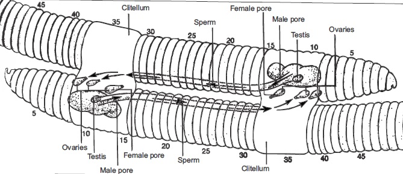
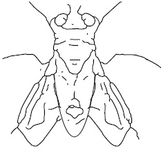

Unicellular organisms are organisms with only one cell.
These organisms can exist as a single cell that functions as
an independent living unit. Examples of such organisms
are: Amoeba, Paramecium, Euglena, Chlamydomonas
etc. Reproduction in unicellular organisms can involve
both Asexual and Sexual reproductions.
The table below itemizes reproduction in unicellular organisms
Unicellular organisms
Type(s) of Reproduction
Amoeba
multiple fission
*Asexual reproduction by binary fission and
(cell division process)
*No sexual reproduction
Paramecium
*Asexual reproduction (cell division)
*Sexual reproduction by conjugation
Spirogyra
*Asexual reproduction by vegetative
propagation
*Sexual reproduction by conjugation
Reproduction in Multicellular Invertebrates
Examples of multicellular invertebrates are worms, (example: earthworm) cockroach, housefly, snail etc.
Organism
Type of Reproduction
Earth worm
Earth worms do reproduce sexually. As it is in many other worms, they are
hermaphrodites. The ovaries where eggs are produced are found in the thirteenth
segment while the testes which produce sperm are located in the tenth and eleventh
segments, two worms lie side by side during mating. Sperms are exchanged from each
other’s body and stored. Each of the Worms secretes a capsule. The clitellum secretes
the capsule. Both eggs and stored sperms are released into the capsule. Fertilization
takes place there and new Worms are developed as the capsule slips ofl’ the worm into
the soil.
Cockroach
Female cockroaches lay eggs which are enclosed in an egg case. The eggs hatches
and the nymph emerge. This is an example of incomplete metamorphosis.
Housefly
Eggs are laid in batches and they hatch in less than 24 hours. Maggots (larva) are
noticed after few days, the larva changes to pupa. After 3 days the adult housefly
emerges. This is an example of complete metamorphosis
Snail
Many snails usually have separate sexes. They reproduce sexually. Snails lay eggs
from which the young ones emerge after intemal fertilization
GENERAL QUESTIONS
1) Which of the nucleus of a Paramecium is active only during reproduction?
2) Which of the nucleus disintegrate during sexual reproduction in Paramecium?
3) In which type of reproduction in Paramecium do we have a new combination of genetic information?
4) In the following organisms, which of them cannot carry out a reproduction that gives rise to organisms with new
combination of genetic information?
Paramecium, Clamydomonas, Amoeba, Spirogyra, Volvox
5) Binary fission in Amoeba is a type of
reproduction.
6) Write two differences between reproduction in Amoeba and that of a Paramecium
7) Spirogyra reproduces asexually by
and sexually by
8) What part of the cells of a spirogyra is mainly involved during its sexual reproduction?
9) The diagram below illustrates sexual reproduction in a spirogyra. Label the part indicated as
A B C and D
fig18.2:
9b The diagram below shows reproduction in an annelid, identify and write down the Segement numbers
where testes are located
fig18.3: Mushroom

9c) Write down one function of the clitellum
10a) Identify the organism by name without given any reason
10b) Where does fertilization take place in the organism?
11) Write briefly on the type of reproduction found in the organism
12) What is a hermaphrodite?
13) Write four examples of organisms that are hermaphrodites
14) Reproduction in a hermaphrodites, is it sexual or asexual reproduction?
15) State the importance of the organism to a farmer
16) How can you differentiate between a male and a female cockroach
17) How does the Cockroach lay its eggs
18) How does the young nymph differ from an adult cockroach
19) Describe sexual reproduction in a housefly
20) Identify, among the conditions below which ones are favourable to larvae of houseflies
Humid environment, bright light, dark place, warm environment
21) Compare the life history of a housefly to that of a cockroach
Cockroach
Housefly
Practical Activities
1. Diagram of sexual reproduction in a unicellular Organism
fig18.4:
The diagram above illustrates the life history of a Unicellular Organism
What is the Organism?
a. Which Phylum does the organism belong?
b. State one other method of reproduction that can be found in the organism
2. Illustrate vegetative propagation in a Spirogyra using diagram. Compare this with its sexual
reproduction
3.
fig18.5a: Specimen A
3.
fig18.5b: Specimen B

a. State one major difference between reproduction in both organisms, in Specimen A and
SpecimenB
b. State two similarities between reproduction in Aand B
c. Repeat the diagram of a the dissected cockroach in Fig. 18.1 and label the following parts:
the head, the thorax, the legs and abdomen.(do it in your practical notebook).
Practical Work
Obtain a large specimen of an earthworm in your area. Using a magnifying lens or microscope (your
teacher will guide you) find out the segment where the ovary and the testes are located. Also identify the
position of the clitellum. Make a large well labeled diagram of the specimen.